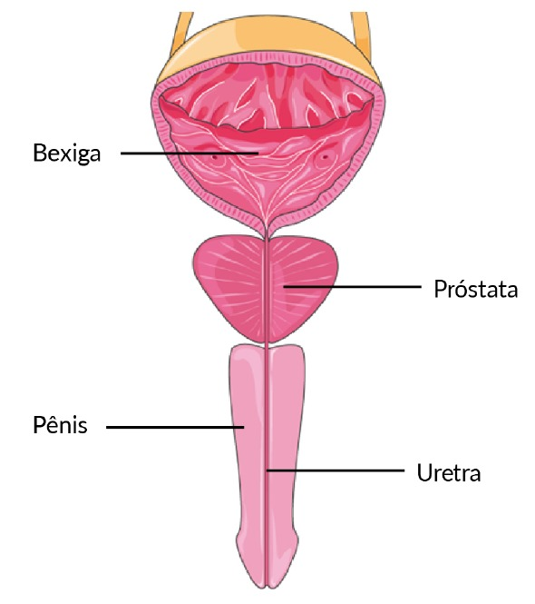

Quando a próstata aumentada começa a bloquear o fluxo de urina, surge a dificuldade para iniciar a micção e a sensação de micção incompleta.
Fluxo urinário pela uretra passando por dentro da próstata.

Fonte: Servier Medical Art by Servier (smart.servier.com), licenciada sob uma licença Creative Commons Attribution 3.0 Unported.